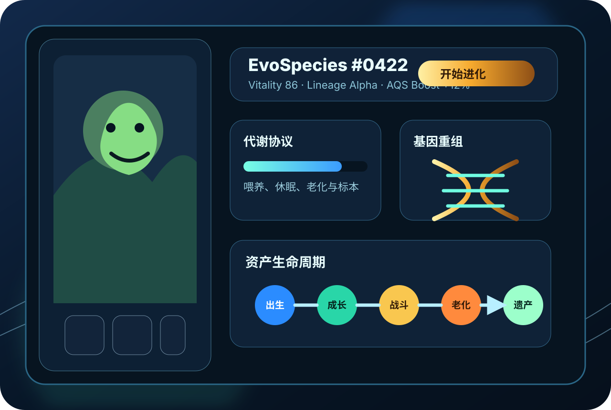

Web2 注意力耗散
用户贡献时间、情绪、内容和关系，平台获得数据与广告收入，用户难以保留资产主权。
Evolutionary Asset Network
EvoWorld 把玩家的注意力、内容贡献、链上行为和社群协作，沉淀为可拥有、可进化、可继承、可交易并可退出的数字生命资产。

Why now
用户贡献时间、情绪、内容和关系，平台获得数据与广告收入，用户难以保留资产主权。
稀缺图片缺少生命周期、使用场景与持续演化理由，资产叙事难以长期维持。
只依赖新资金和收益叙事，会快速进入通胀、挤兑与流失的负循环。
Core loop
EvoWorld 的长期壁垒不是单个玩法，而是一套解释数字生命如何出生、成长、争斗、老去、死亡并留下遗产的规则系统。
活力、老化、休眠、标本和化石状态让资产必须被照料，避免永久存在导致价值稀释。
杂交负责横向繁衍与基因重组，强化负责纵向养成与个体发育，共同消耗 $DARWIN。
死亡不归零，退出资产可进入博物馆，保留历史记录、血统声望与微量稳定回流。
Asset system
$DARWIN、EvoSpecies、基因碎片与标本共同形成从消耗、燃烧、回流到治理的闭环，让贡献与退出都能被协议记录。
MVP proof
Join the origin tribe
适合用于融资路演、众筹预热、合伙人招募与社区冷启动页面。
查看冷启动策略